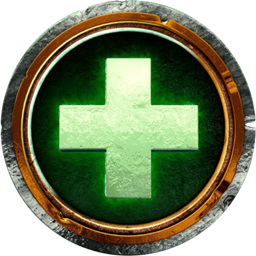
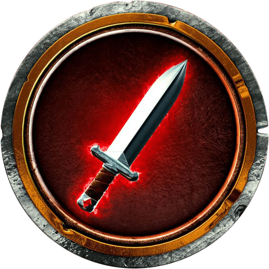

Tanque (Tank)
El tanque recibe la mayor parte del daño enemigo y mantiene el agro para proteger a su equipo.
Cómo funciona el Tank
Tipos de Tank
- Druida Guardián
- Cazador de Demonios Venganza
- Caballero de la Muerte Sangre
Sanador (Healer)
El sanador mantiene con vida al grupo restaurando su salud durante los combates.
Cómo funciona el Healer
Tipos de Healer
- Druida Restauración
- Sacerdote Disciplina
- Chamán Restauración
DPS (Daño por Segundo)
Los personajes DPS infligen daño a los enemigos y ayudan en las mecánicas del combate.
Cómo funciona el DPS
Tipos de DPS
- Druida Balance
- Caballero de la Muerte Escarcha
- Paladín Reprensión
Ranking de Clases de World of Warcraft
| Tier | Clases Ejemplares | Descripción General |
|---|---|---|
| Tier S | Paladín, Druida, Mago | Clases muy versátiles, con alto rendimiento en múltiples roles. |
| Tier A | Guerrero, Sacerdote, Cazador | Fuertes en sus roles específicos, con buen equilibrio y utilidad en grupo. |
| Tier B | Pícaro, Chamán, Brujo | Clases útiles pero con menor versatilidad o dependencia de equipo. |